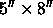
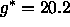
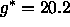

The spectroscopic system is discussed in york00. It produces 640 individual spectra in a three degree diameter field at a resolution of about 1800 in the wavelength range of 3800 to 9200 Å. This wavelength range is divided between two cameras by a dichroic at about 6150 Å, and there are two spectrographs, each producing 320 spectra. There are thus 4 CCD detectors, each of the same kind as are present in the g, r, and i bands in the camera, 2048 pixels square with 24 micron pixels.
The fibers carrying the light from the drilled plug-plates to the spectrographs subtend about 3 arcseconds in the focal plane, and are imaged in turn in the spectrograph cameras with a footprint of about 3 pixels. The straight-through transmissive immersion grisms produce a dispersion which is roughly linear in log wavelength. The spectrographs are very efficient; quantum efficiencies on the sky as measured from standard stars as a function of wavelength for each of the four spectrographic CCDs are presented in Figure 5. They peak at over 25% in the red, and just under 20% in the blue.
The nominal exposure time for each plate is 45 minutes, split into at
least three parts for cosmic ray rejection, with the exact number
determined by observing conditions. This set of science exposures is
preceded and followed by a series of shorter exposures for
calibration: arcs, flat-fields, and a 4-minute smear
exposure on the sky for spectrophotometric calibration, in which the
telescope is moved so that the 3 arcsec fiber on each object
effectively covers a  aperture, aligned with the
parallactic angle. The smear exposures allow us
to account for object light excluded from the 3 arcsec fibers due to
seeing and atmospheric refraction; they provide an
accurate (albeit low signal-to-noise ratio; S/N) measure of the true
spectral shape of the objects and are used for spectrophotometric
calibration . The calibration and science exposures are immediately
processed through a streamlined version of the 2d spectroscopic
pipeline (§ 4.10) to inform the observers whether the
calibrations were successful and to provide S/N diagnostics on the
science exposures.
. The calibration and science exposures are immediately
processed through a streamlined version of the 2d spectroscopic
pipeline (§ 4.10) to inform the observers whether the
calibrations were successful and to provide S/N diagnostics on the
science exposures.
For each science exposure, the  per pixel through the SDSS imaging
passbands is measured and evaluated as a function of fiber magnitude
for each spectrograph camera.
We take repeated 15-minute
exposures until the cumulative median at
 and in all 4 cameras.
In clear, non-moony conditions,
the
per pixel through the SDSS imaging
passbands is measured and evaluated as a function of fiber magnitude
for each spectrograph camera.
We take repeated 15-minute
exposures until the cumulative median at
 and in all 4 cameras.
In clear, non-moony conditions,
the  threshold is easily reached in 3 exposures, and we never
take fewer than three exposures; in (partially)
cloudy or moony conditions, more exposures may be required.
threshold is easily reached in 3 exposures, and we never
take fewer than three exposures; in (partially)
cloudy or moony conditions, more exposures may be required.